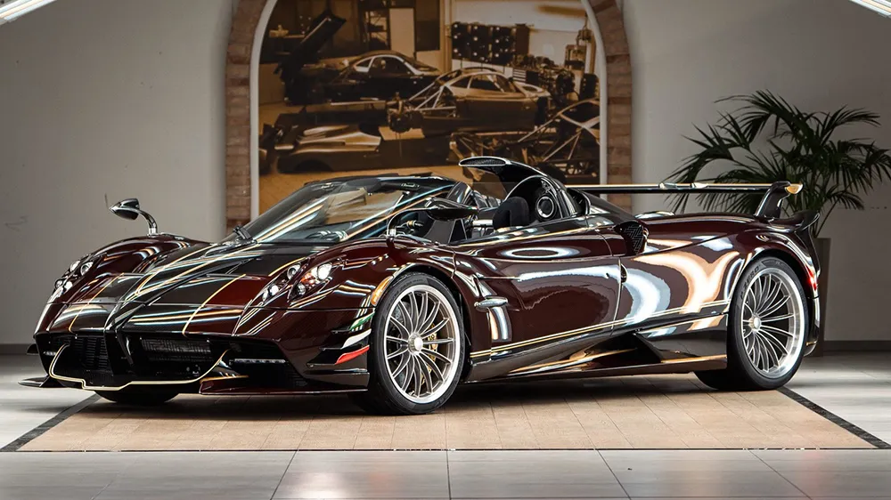

Pagani Automobili Article Talk Read Edit View history Tools Appearance hide Text Small Standard Large Width Standard Wide Color (beta) Automatic Light Dark From Wikipedia, the free encyclopedia Pagani Automobili S.p.A. Company type Private Industry Automotive Founded 1992; 33 years ago Founder Horacio Pagani Headquarters San Cesario sul Panaro, MO, Italy Key people Horacio Pagani (CEO/President) Products Sports cars Carbon fibre components Revenue € 114,382,997 (2021[1]) Owner Horacio Pagani PIF (30%) Number of employees 162 (2023)[1] Website Pagani.com Pagani Automobili S.p.A. (commonly known as Pagani) is an Italian manufacturer specializing in high-performance sports cars and advanced carbon fiber components. Founded in 1992 by Argentine-Italian engineer and entrepreneur Horacio Pagani, the company is headquartered in San Cesario sul Panaro, near Modena, Italy. The brand gained global recognition with its debut model, the Pagani Zonda, followed by the critically acclaimed Pagani Huayra and the latest Pagani Utopia. Pagani's cars often feature a V12 engine developed in collaboration with Mercedes-AMG. History Horacio Pagani, who formerly created and managed Lamborghini's composites department, founded Pagani Composite Research in 1988. This new company worked with Lamborghini on numerous projects, including the restyling of the Lamborghini Countach 25th Anniversary Edition, the Lamborghini LM002, the P140 design concept, and the Diablo. In the late 1980s, Pagani began designing his own car, then referred to as the "C8 Project". Pagani planned to rename the C8 the "Fangio F1" to honour his friend, the Argentine five-time Formula One champion Juan Manuel Fangio. In 1991, Pagani established Modena Design to meet the increasing demand for his design, engineering, and prototyping services. In 1992, he began construction of a Fangio F1 prototype, and in 1993, the car was tested at the Dallara wind tunnel with positive results. In 1994, Mercedes-Benz agreed to supply Pagani with V12 engines. The cost of these cars are at a total of 2.3 million dollars.[clarification needed] The final car was named the Zonda C12, the first of the Zonda line (the Fangio F1 name was dropped out of respect for Fangio, who died in 1995). It was first presented at the 1999 Geneva Motor Show. In 2005, Pagani announced that it planned to triple its production output within the next three years, and to enter the US market in 2007. On 30 June 2010, Pagani claimed a new record for production-based cars using the Pagani Zonda R and completing the Nürburgring in 6:47, beating the Ferrari 599XX.[2] Pagani Zonda Main article: Pagani Zonda Pagani Zonda C12 Pagani's first model, the Zonda, is powered by a mid-mounted DOHC V12 engine manufactured by Mercedes-Benz's AMG division. The car's design was inspired by jet fighters and the famous Sauber-Mercedes Silver Arrow Group C cars, and features several unique design elements, including its circular four pipe exhaust system. The Zonda's production run ended with the Zonda HP Barchetta. Only three were produced with one unit retained for Horacio Pagani's personal collection and the other two costing US$15M.[3] Zonda C12 6.0 L (5,987 cc) C12-S 7.0 L (7,010 cc) Zonda S 7.3 L (7,291 cc) Zonda Roadster Zonda GR (racing car) Zonda F Zonda Roadster F Zonda F Clubsport Zonda Roadster F Clubsport Zonda Cinque Pagani announced a variant of the Zonda named "Zonda Cinque" which was introduced as a 2009 model. The Cinque is based on the track-only Zonda R, but features a new 669 hp (678 PS; 499 kW) Mercedes-Benz M297 V12 engine, active aerodynamics, and features exterior elements from the newly developed material "carbon-titanium fibre", which is stronger and lighter than typical carbon fibre. Only five were produced, all of which were already spoken for.[4] Pagani announced the Zonda Cinque Roadster in July 2009, of which only five were produced. The roadster uses the same Mercedes-Benz M297 V12 engine as the coupé version, but has been made lighter and stronger to keep the car structurally rigid. Both the coupe and the roadster accelerate from 0–60 mph (97 km/h) in 3.4 seconds, 0–124 mph (200 km/h) in 9.6 seconds and have a top speed of 217 mph (349 km/h). The Cinque uses carbon-ceramic brakes from Brembo. They help decelerate the car from 62 mph (100 km/h)–0 mph in 3.1 seconds and 124 mph (200 km/h)–0mph in 4.3 seconds. The maximum side acceleration is 1.45g with road tyres. The car produces 750 kg (1,653 lb) of downforce at 186 mph (300 km/h).[5] Zonda Tricolore At the 2010 Geneva Motor Show, Pagani announced the exclusive Zonda Tricolore, built to commemorate the 50th anniversary of the Frecce Tricolori, the Italian Air Force's aerobatic squadron.[6] Originally intended to be limited to a single car, eventually three were produced. The Tricolore is based on a top specification Zonda Cinque, built on a carbon titanium chassis with sequential transmission and titanium exhausts. The mid-mounted 7.3L M297 V12 engine produces 661 hp (670 PS; 493 kW), which helps the car achieve a top speed of 217 mph (349 km/h) and a 0–60 mph (97 km/h) acceleration time of 3.2 seconds. Other production variants This section does not cite any sources. Please help improve this section by adding citations to reliable sources. Unsourced material may be challenged and removed. (May 2024) (Learn how and when to remove this message) Zonda R Zonda Revolucion Zonda HP Barchetta Zonda Revo Barchetta Bespoke editions This section does not cite any sources. Please help improve this section by adding citations to reliable sources. Unsourced material may be challenged and removed. (May 2024) (Learn how and when to remove this message) 2004 C12 S Monza (a track day car based on the GR) – commissioned by King Moka 2009 Zonda PS (originally white with golden contrast) – commissioned by Peter Saywell 2009 Zonda GJ (bare carbon) 2010 Zonda Uno (turquoise) 2011 Zonda HH (sky blue) - commissioned by programmer David Heinemeier Hansson 2011 Zonda 750 (bare carbon fibre with pink accents) 2011 Zonda Rak (yellow) 2011 Zonda Absolute (matte black) 2011 Zonda 760RS (carbon fibre black) 2012 Zonda 760LH (Purple) – commissioned by F1 driver Lewis Hamilton 2012 Zonda 764 Passione (Grey/Purple) 2015 Zonda 760 X 2016 Zonda 760 OLIVER Evolution 2017 Zonda Fantasma Evo (red tinted carbon with Italian flag striping in the centre along with bare carbon on the centre) 2018 Zonda Riviera (snow white with bare carbon in the centre and blue accents) Pagani Huayra Main article: Pagani Huayra Pagani Huayra The Pagani Huayra, a successor to the Pagani Zonda, was initially revealed online in a press release on 25 January 2011. It was officially revealed at the 2011 Geneva Motor Show. The car is named after the Quechua god of wind, Huayra-tata.[7] The engine is a 6.0-litre twin-turbo M158 V12 engine from Mercedes-AMG producing 544 kW (740 PS; 730 hp)[8] and 1,000 N⋅m (740 lb⋅ft) of torque.[8] The Huayra's body is made from carbotanium; a lightweight composition of carbon fibre and titanium. The Huayra has been redesigned from the ground up, but shares many visual qualities with its predecessor. The car can accelerate from 0 to 60 mph (97 km/h) in 3.2 seconds and has a top speed of 235 mph (378 km/h). Only 100 units of the Huayra were produced, each costing £1,000,000 (1.05 million US$) without options. Official technical data Engine: 6.0 L Mercedes-AMG M158 twin-turbo V12 Displacement: 5,980 cc (365 cu in) Power: 544 kW (740 PS; 730 hp) at 5800 rpm Torque: 1,000 N⋅m (740 lb⋅ft) at 2250–4500 rpm Transmission: 7-speed sequential manual with AMT robotic system including driving modes Length: 4,605 mm (181.3 in) Wheelbase: 2,795 mm (110.0 in) Height: 1,169 mm (46.0 in) Width: 2,036 mm (80.2 in) Dry weight: 1,350 kg (2,976 lb) Weight distribution: 44% front 56% rear Drag Coefficient: .31 to .36 (variable)[9] Huayra BC An extreme, track-focused version of the Huayra called the Huayra BC was unveiled at the 2016 Geneva Motor Show. The Huayra BC is named after the late Benny Caiola, a friend of Horacio Pagani, and the first Pagani customer. The Huayra BC has an improved version of the standard Huayra's engine, producing 764 PS (562 kW; 754 hp) and 1,000 N⋅m (740 lb⋅ft) of torque.[10] The weight is reduced by 132 kg (291 lb) to just 1,218 kg (2,685 lb), thanks to the use of an all-new material called 'carbon-triax' in the car which Pagani claims is 50% lighter and 20% stronger than regular carbon fibre, giving the car a power-to-weight ratio of 1.62 kg (3.57 lb) per horsepower. The Huayra BC uses a lightweight titanium exhaust system, new aluminum alloy wheels, and a stripped-out interior. The tyres are Pirelli P-Zero Corsa tires that feature 12 different rubber compounds, and the suspension and wishbones are made of aeronautical grade aluminum, known as Avional. The Huayra BC also has a new front bumper with a front splitter and winglets, deeper side skirts, and an air diffuser that stretches the entire width of the rear bumper along with a large rear wing. The car uses an Xtrac 7-speed sequential manual transmission and has an electro-hydraulic actuation system. Pagani has stuck with a single-clutch gearbox because it weighs 40% less than double-clutch gearboxes. 30 units of the Huayra BC were made, despite the claim by Pagani that the model was limited to 20 units. Each unit cost in excess of €2.1 million (2.21 million US$).[11][12] Later, Pagani unveiled the Huayra Roadster BC and produced 40 units. Huayra Roadster After 2 years of development, the Huayra Roadster was officially unveiled in the 2017 Geneva Motor Show.[13] The design of the car underwent several changes, with the most noticeable being the rear, with updated eyelid-like fixed flaps that continued with the design and eventually ended on the rear lights. Vents were included on the rear engine cover for efficient cooling of the engine, and the wheels were updated specifically for the car along with Pirelli P-Zero tires, along with the addition of a spoiler at the front. The car has conventional doors instead of the Gull-wing doors used in the coupé as such doors cannot be fitted to an open top car. The car has the same twin-turbo V12 engine as the coupé but with the power upgraded to 764 PS (562 kW; 754 hp) at 6,200 rpm and 1,000 N⋅m (740 lb⋅ft) of torque at 2,400 rpm. The power is delivered to the rear wheels via a Xtrac 7-speed sequential manual transmission which is 40% lighter than its coupé counterpart. The car was constructed by a material developed by Pagani called 'carbon triax', which is a combination of tri-axis fibre glass with carbon fibre. This allowed the car to weigh 70 kg (154 lb) less than its coupé counterpart, for a total of 1,280 kg (2,820 lb), making it the first roadster lighter than the coupé. Only 100 were made, all of which were sold even before production ended.[13] Pagani said that the car could accelerate at 1.8 G.[14] Bespoke editions Continuing its tradition with the Zonda, Pagani produced several bespoke Huayras. Huayra Carbon Edition (bare carbon exterior) Huayra White Edition (snow white exterior with carbon fibre bits) Huayra La Monza Lisa (bare carbon exterior with tri-colore pinstriping, inspired by the Zonda R) – commissioned by Kris Singh Huayra 730 S "Da Vinci" (tinted blue carbon exterior with gold accents and wheels, inspired by the Zonda tri-colore) – originally commissioned by Alejandro Salomon Huayra BC Kingtasma (tinted red carbon exterior with tri-colore pinstriping and gold crowns beneath the two rear flaps featuring a roof scoop) Huayra Pearl (tinted blue carbon exterior with a split rear wing inspired by the Zonda C12 and a roof scoop inspired by the Zonda Cinque) Huayra Dinastia (three special edition bespoke cars produced for the Chinese market inspired by Chinese traditions) Huayra II Ultimo (final Pagani Huayra coupé featuring the optional pacchetto tempesta aero package along with a bespoke roof scoop and rear wing with a paint job inspired by Formula One driver Lewis Hamilton's F1 car) Huayra Hermes Edition (a 1 of 1 custom Coach-Built Pagani Huayra with interior/exterior detailing by Hermes. The car is owned and was partly customised by Iranian-American entrepreneur; Manny Khoshbin) Huayra Pieagoni TPG (black and white carbon exterior) commissioned by a Dallas based watch dealer and car collector. Huayra Codalunga (a 1 of 5 longtail version of the Huayra) Pagani Utopia Main article: Pagani Utopia Pagani Utopia The successor to the Huayra, named Utopia, was revealed on 12 September 2022. A total of 99 examples of the closed coupé model are planned, with open and track variants possible in the future.[15] All 99 coupés are already assigned to the customers. The first car was delivered in October 2023.[16] The Utopia uses the same M158 twin-turbocharged V12 engine as the Huayra, designed and built by Mercedes-AMG, but upgraded to produce 864 PS (635 kW; 852 hp) at 6000 rpm and 1,100 N⋅m (811 lb⋅ft) of torque available between 2800 and 5900 rpm. Pagani partnered with Xtrac to develop a 7-speed gearbox that will be mounted transversely, available as a pure manual or an automated manual, and coupled with an electro-mechanical differential by a triple plate clutch.[17] See also flag Italy portal Companies portal List of Italian car manufacturers References "DATI DELLA SOCIETÀ - HORACIO PAGANI S.P.A." ufficio camerale (in Italian). Italy. Archived from the original on 8 April 2023. Retrieved 3 September 2023. "Pagani Automobili | News | Nurburgring record Zonda R". Archived from the original on 2 February 2017. Retrieved 27 January 2017. "HP Barchetta, the last production Zonda". road and track. 21 August 2017. Archived from the original on 5 December 2017. Retrieved 5 December 2017. "Pagani Zonda Cinque". Automoblog.net. Archived from the original on 14 February 2012. "Pagani Zonda Cinque Roadster". Automoblog.net. 7 July 2009. Archived from the original on 14 February 2012. Retrieved 7 July 2009. "04.03.2010 PAGANI PAY TRIBUTE TO ANNIVERSARY OF THE "FRECCE TRICOLORI" WITH UNIQUE ZONDA". www.italiaspeed.com. Archived from the original on 10 March 2012. Retrieved 7 March 2010. "Pagani Huayra". exoticcars.about.com. Archived from the original on 4 November 2014. Retrieved 9 December 2014. "2011 Pagani Huayra specifications, information, data, photos 267773". carfolio.com. Archived from the original on 24 September 2015. Retrieved 9 December 2014. "Horacio Pagani's Huayra interview with Jay Leno". jaylenosgarage.com. 25 April 2012. Archived from the original on 21 December 2021. Retrieved 1 February 2013. "Pagani Huayra BC review - lighter, more powerful, faster... Look out, LaFerrari!". Archived from the original on 8 November 2020. Retrieved 19 January 2018. "First drive: the hardcore Pagani Huayra BC". Top Gear. 18 February 2016. Archived from the original on 29 December 2016. Retrieved 7 January 2017. Ronan Glon (19 February 2016). "Pagani's insane Huayra BC boasts more power, more carbon fiber, and a more muscular look". News.yahoo.com. Archived from the original on 28 October 2020. Retrieved 7 January 2017. Adams, Lawrence (7 March 2017). "Geneva 2017: Pagani Huayra Roadster". GTspirit. Archived from the original on 15 January 2021. Retrieved 8 March 2017. Barlow, Jason. "The Pagani Huayra Roadster pulls a record-breaking 1.8G". British GQ. Archived from the original on 7 January 2021. Retrieved 8 March 2017. "Pagani Utopia bucks hybrid trend". adelaidenow.com.au. Archived from the original on 12 September 2022. Retrieved 15 July 2022. Kelshikar, Tushar (6 October 2023). "First customer Pagani Utopia delivered; calls Monaco its home". The Supercar Blog. Archived from the original on 3 December 2023. Retrieved 30 October 2023. "Pagani Utopia Technical Contents" (PDF). pagani.com. Archived (PDF) from the original on 13 September 2022. Retrieved 13 September 2022.
 Home